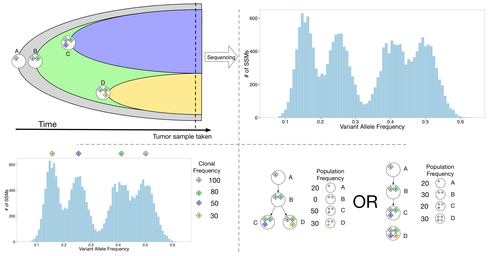

Profesor asociado en la Universidad de los Andes en el departamento de ciencias de la computación. Investigador en la áreas de aprendizaje de máquina, estadística aplicada, y programación matemática. Si usted se encuentra interesado en éstas áreas del conocimiento, y posee habilidades de programación en lenguajes de alto y bajo nivel (Python, Julia, R, C, C++) y madurez matmática, estoy interesado en trabajar con usted.

Data mining and pattern matching research lab
Copyright 2015, Juan Eduardo Soto